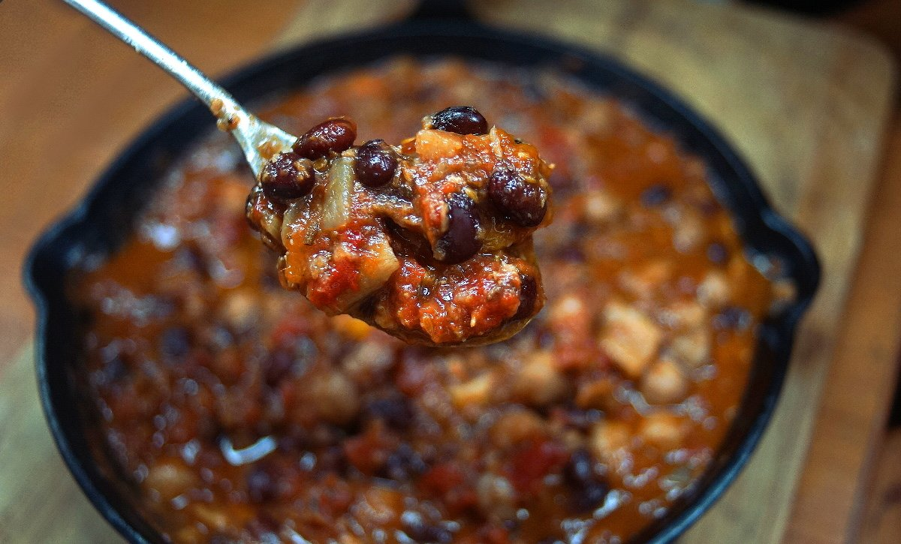

bean chili
6 portions — 25 minutes
A hearty, warm dish. The above photo is the day-after portion.
When making chili, we swap vegetables in and out depending on what we have. For instance, we might add only carrots, or two parsnips, or potatoes. Parnips, like carrots, are cheap and plentiful in winter. Celery is common in chili recipes, but we omit it because Devine isn't a fan.
Beans. For beans, we try and use black beans as the bulk of the recipe, but we like to add chickpeas. Chickpeas in chili is not common, but it's a legume that we always have on hand and that we both love (we don't keep pinto, or kidney beans). Swapping chickpeas for lentils would also be delicious.
Canned beans? It is possible to use canned beans, but buying dry beans is cheaper, and means less weight on the boat. For those who insist on using cans, 1 drained 425 g (15 oz) can of chickpeas and 1 drained 425 g (15 oz) cans of black beans is fine for this recipe.
Beer? Beer provides a great flavorful medium for the beans and vegetables to simmer in, it adds depth of flavor. Dark, stouts and amber beer lend well to chili. You can omit the broth or beer and exchange for 350 ml of extra tomatoes and their juices.
Chile powder. This is different than chili powder. Chile powder refers to pure dried, crushed (and sometimes smoked) chipotle, habanero, ancho, guajillo, piri piri, kashmiri, etc. There are no other added ingredients. To make your own, see this recipe.
Cocoa powder. Adding cocoa powder is a trick we learned from making Japanese curry roux. Japanese cooks like to add chocolate. It pairs well with chili. Like beer, it adds depth to the dish..
Pressure cooker. We use our pressure cooker to prepare our chili because it helps us save on fuel (our boat uses LPG), and because we prepare beans from dry. Adjust cooking times for your altitude.
Fresh tomatoes. If you have plenty of chopped fresh tomatoes available, or if you can your own, you can use 800 g (roughly 10 to 12 whole, although it depends on the kind of tomato, e.g., cherry vs roma) of chopped fresh tomatoes instead of a can.
- black beans375 g, cooked
 chickpeas250 g, cooked
chickpeas250 g, cooked olive oil30 ml
olive oil30 ml yellow onion1
yellow onion1 carrots1
carrots1- parsnips1
 garlic4 cloves, minced
garlic4 cloves, minced jalapeno peppers2
jalapeno peppers2- chile powder8 g
 cumin seeds5 g
cumin seeds5 g oregano3 g, dry
oregano3 g, dry- tomato can796 g
 cocoa powder2.5 g
cocoa powder2.5 g water500 ml
water500 ml- natural brown sugar15 g
 lemon juiceto taste
lemon juiceto taste
chili
- Soak 125 g (3/4 cup) of dry chickpeas and 125 g (3/4 cup) black beans in water for 4-8 hours (I soak them in separate bowls). Drain.
- In a small skillet, toast 5 g (1 tbsp) of whole cumin seeds until fragrant. Using a mortar and pestle, grind to a powder. Set ground cumin aside.
- Bring pressure cooker pot (or regular pot if not using a pressure cooker) to medium-high heat, add 30 ml (2 tbsp) of olive oil, 1 chopped yellow onion, 4 minced garlic cloves, 2 stemmed, seeded and chopped jalapeños, 8 g (2 tbsp) of chile powder (I use either chipotle, ancho or habanero), the ground cumin powder and 3 g (1 tbsp) of dried oregano. Cook the mixture for 5-7 minutes, or until onion is well-browned.
- Add the 1 chopped parsnip, 1 chopped carrot, the drained chickpeas and drained black beans, 796 g (or 28 oz can, 10-12 whole tomatoes) of diced tomatoes, 2.5 g (1 tsp) of cocoa powder (or 1 chocolate square), 500 ml (2 cups) of water (or broth, also possible to sub 350 ml for beer). Cook in a pressure cooker for 7-8 minutes, let pressure release naturally. If not using a pressure cooker, lower heat, and simmer for 1 1/2 hours.
- Optionally, add 15 g (1 tbsp) of sugar (or maple syrup), and a dash of lemon juice to help balance the sauce. Season with salt and black pepper. For a thicker chili, transfer half of the mixture into another bowl and mash it with a potato masher. Serve immediately or let cool. The chili tastes best the day after it is made. We usually have it on the same day, and then again for lunch the next day *chef's kiss*.